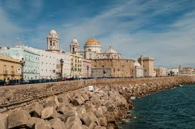

El itinerario de unos 200 kilómetros comienza en Cádiz y acaba en Málaga tras pasar por los parques naturales de Grazalema y de Los Alcornocales y por distintos pueblos decorados por las típicas casas blancas de la zona. Olvera, Setenil de las Bodegas, Algatocín, Benaoján, Zahara de la Sierra, Gaucín, Casares y Benadalid son algunas de las paradas obligatorias. Para ello nuestra ruta incluirá principalmente las carreteras: A-384, CA-413, CA-9120, A-369, MA-555, A-374, A-2300 y A-377. Pararte y disfrutar de una tortilla de camarones o de una bandeja de fritura de pescadito te hará reponer fuerzas para seguir con ánimo el resto de kilómetros.
